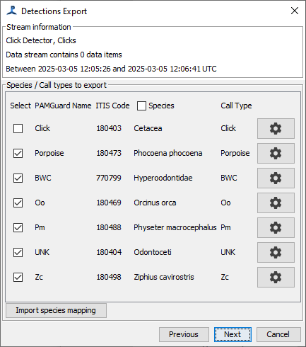
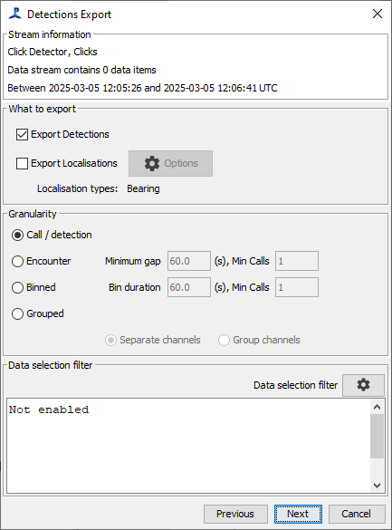
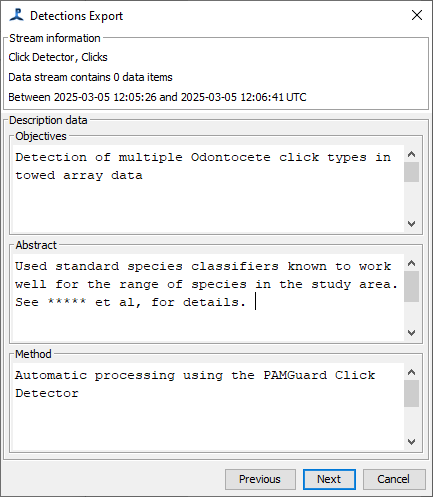
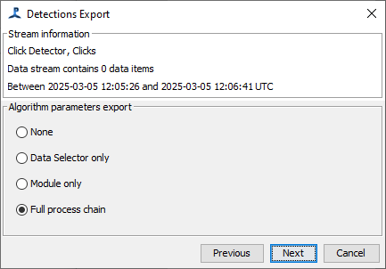

The bottom left panel of the Tethys module shows a list of different types of PAMGuard data that can be exported. The data in this list correspond to the various PAMGuard modules that have been configured. See the data model viewer help for an example of how PAMGuard might be configured.
Some of these data represent detections of specific species or phenomena that must be translated to Tethys. A context menu (right-click on most computers) will show the option "Species info..." that will allow you to specify the translation of events to species identifiers and call/sound types. If you try to export without having done this, the species info dialog will be started automatically prior to export.
In the sample data blocks below, four modules have been configured, but only one of them has been run. Column "N Pam Data" indicates the number of data records that have been produced, and "PAMGuard Time" tells us when the data were processed. "Tethys Documents" indicates how many Tethys records have been produced, and should be 0 until the data are exported.
Select the data blocks to be exported by clicking on them. Multiple lines can be selected by using keyboard modifiers such as holding the shift while clicking to select all data blocks between the last clicked block and where you click. Holding the alternate (ALT) key will allow selection or de-selection of a single item without affecting the selection state of other blocks.
Once the data blocks have been selected, press export. A series of dialogs will guide you through the export process. The first set of dialogs simply display a summary of information about what will be exported.

There is nothing to change in this summary. Press Next once you have reviewed it.
The second panel allows you to check ITIS species codes and call types and to select which call types you want to export.
The next panel allows you to chose whether to export Detections, Localizations (if available), or both. Here, you can also select the granularity, which will be a choice of "Call", "Encounter", "Binned", or "Grouped", depending on the type of data. You can also select an optional data filter which will restrict the output using criteria specific to the detector you're using. Note that there may be overlap between the data filter and the selections you make in the earlier species selection page.
This panel allows specification of your objectives, abstract, and method. Many modules will have pre-populated the method for you. It is recommended to populate the objectives and abstract with as much information as possible.
Press Next to proceed to the next step of the dialog. You will be asked what details you wish to store within the parameters that were used to produce these data. Your must select one of the following:
The final page of the dialog has an "Export data" button. Press either this, or the Export button at the bottom of the dialog, to export the data. The system will begin generating the Tethys document and display progress as it works through the data. When complete, it will show a message to indicate that export was successful, or an error message.
Translating species to taxonomic serial numbers (species encoding)